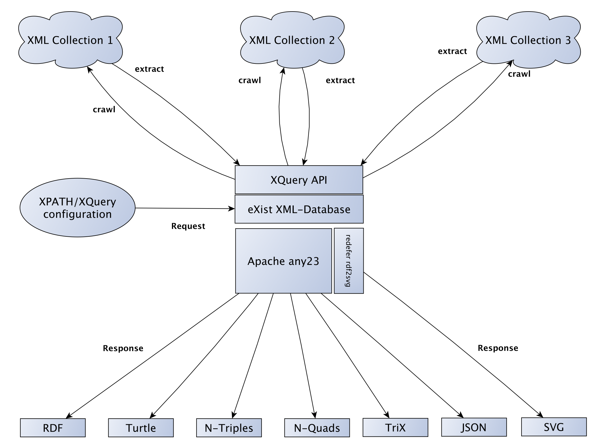

<?xml version="1.0" encoding="UTF-8"?>
<div xmlns="http://www.w3.org/1999/xhtml" data-template="templates:surround" data-template-with="templates/page.html" data-template-at="content">
    <div class="row-fluid">
        <div class="span16">
            <div class="page-header">
                <h1 data-template="config:app-title">Generated page</h1>
                <p>A generic webservice to extract RDF statements from XML resources.</p>
            </div>
            <div class="row-fluid">
                <div class="span8">
                    <h2>Quickstart</h2>
                    <p>
                		With the XTriples webservice you can crawl XML repositories and extract RDF statements using a simple configuration based on XPATH/XQuery expressions. 
                		The webservice can be used with direct POST, form-style POST or GET requests.
                    </p>
                    <h4>Example</h4>
                    <p class="btn-group">
                        <a href="examples/gods/all.xml" class="btn btn-info">XML</a>
                        <a href="examples/gods/configuration.xml" class="btn btn-info">Configuration</a>
                        <a data-template="app:link" data-template-href="extract.xql?configuration=$baseUrl/examples/gods/configuration.xml" data-template-class="btn btn-info">Result</a>
                        <a data-template="app:link" data-template-href="extract.xql?configuration=$baseUrl/examples/gods/configuration.xml&amp;format=svg" data-template-class="btn btn-info">SVG</a>
                        <a href="http://graves.cl/visualRDF/?url=xtriples.spatialhumanities.de%2Fextract.xql%3Fconfiguration%3Dhttp%3A%2F%2Fxtriples.spatialhumanities.de%2Fexamples%2Fgods%2Fconfiguration.xml" class="btn btn-info">Graph</a>
                    </p>
                    <h3>Form-style POST requests</h3>
                    <p>Example for the form-style POST API. Set your output format, input your configuration and submit the form.</p>
                    <form action="extract.xql" method="post" style="background: #F5F5F5; padding: 1em; border: 1px solid #9F9F9F;">
                        <div class="control-group">
                            <label class="control-label" for="format">Output Format</label>
                            <div class="controls">
                                <select name="format" id="format">
                                    <option value="rdf">RDF/XML</option>
                                    <option value="turtle">Turtle</option>
                                    <option value="ntriples">N-Triples</option>
                                    <option value="nquads">N-Quads</option>
                                    <option value="trix">TriX</option>
                                    <option value="json">JSON</option>
                                    <option value="svg">SVG Graph</option>
                                    <option value="xtriples">XTriples (for debugging)</option>
                                </select>
                            </div>
                        </div>
                        <div class="control-group">
                            <label class="control-label" for="configuration">Configuration</label>
                            <div class="controls">
                                <textarea rows="5" class="input-xxlarge" name="configuration" id="configuration"/>
                            </div>
                        </div>
                        <div class="control-group">
                            <div class="controls">
                                <button type="submit" class="btn btn-inverse">Extract</button>
                            </div>
                        </div>
                    </form>
                    <h3>Direct POST requests</h3>
                    <p>You can also submit direct POST requests to <code>http://xtriples.spatialhumanities.de/extract.xql</code>
                    </p>
                    <p>The request body should contain your XTriples configuration. Additionally, you need to send the <code>Content-Type</code> HTTP header with a value of <code>application/xml</code> and the <code>format</code> HTTP header with one of the following values:</p>
                    <table class="table table-bordered">
                        <thead>
                            <tr>
                                <th>value</th>
                                <th>result</th>
                            </tr>
                        </thead>
                        <tbody>
                            <tr>
                                <td>rdf</td>
                                <td>returns extraction result as RDF</td>
                            </tr>
                            <tr>
                                <td>turtle</td>
                                <td>returns extraction result in Turtle notation</td>
                            </tr>
                            <tr>
                                <td>ntriples</td>
                                <td>returns extraction result as N-Triples</td>
                            </tr>
                            <tr>
                                <td>nquads</td>
                                <td>returns extraction result as N-Quads</td>
                            </tr>
                            <tr>
                                <td>trix</td>
                                <td>returns extraction result as TriX named graph</td>
                            </tr>
                            <tr>
                                <td>json</td>
                                <td>returns extraction result as JSON-LD</td>
                            </tr>
                            <tr>
                                <td>svg</td>
                                <td>returns extraction result as SVG Graph</td>
                            </tr>
                            <tr>
                                <td>xtriples</td>
                                <td>returns extraction result as XTriples XML for debugging purposes</td>
                            </tr>
                        </tbody>
                    </table>
                    <p>If you send no format header, the format defaults to rdf.</p>
                    <h3>GET requests</h3>
                    <p>The most compact way to use the service is with HTTP GET requests. This is the URL scheme:</p>
                    <p>
                        <code>http://xtriples.spatialhumanities.de/extract.xql?configuration=###YOUR_URI###&amp;format=###FORMAT_KEYWORD###</code>
                    </p>
                    <p>The keywords for the format parameter are the same as for direct POST requests (see above).</p>
                    <h3>Configuration Template</h3>
                    <p>This is the basic structure of a XTriples configuration:</p>
                    <div>
                        <pre class="prettyprint linenums">
&lt;xtriples&gt;
    &lt;configuration&gt;
        &lt;vocabularies&gt;
            &lt;vocabulary prefix="###MY_NAMESPACE_PREFIX###" uri="###MY_NAMESPACE_URI###"/&gt;
            &lt;vocabulary prefix="rdf" uri="http://www.w3.org/1999/02/22-rdf-syntax-ns#"/&gt;
        &lt;/vocabularies&gt;
        &lt;triples&gt;
            &lt;statement&gt;
                &lt;subject prefix="###MY_NAMESPACE_PREFIX###"&gt;###XPATH###&lt;/subject&gt;
                &lt;predicate prefix="rdf"&gt;about&lt;/predicate&gt;
                &lt;object type="literal"&gt;###XPATH###&lt;/object&gt;
            &lt;/statement&gt;
        &lt;/triples&gt;
    &lt;/configuration&gt;
    &lt;collection uri="###MY_COLLECTION_URI###"&gt;
        &lt;resources uri="{###XPATH###}"/&gt;
    &lt;/collection&gt;
&lt;/xtriples&gt;</pre>
                    </div>
                    <p>Read about all configuration details in the <a href="documentation.html">documentation</a>...</p>
                </div>
                <div class="span4">
                    <h3>Design principles</h3>
                    <ul>
                        <li>Generic - works on any XML</li>
                        <li>Simple - easy to configure</li>
                        <li>Powerful - for building complex statements</li>
                        <li>Flexible - returns several formats</li>
                        <li>RESTful - uses http for request and response</li>
                    </ul>
                    <a href="resources/images/structure.png">
                        
                    </a>
                </div>
                <div class="span4">
                    <h3>Documentation</h3>
                    <p>
            			Check out the full <a href="documentation.html">documentation</a> with all configuration details. 
                    	If you would like to create your own instance of this service you can clone the repository on <a href="https://github.com/spatialhumanities/xtriples">GitHub</a>
                    	or download a prebuilt eXist-db XAR package right <a href="http://download.spatialhumanities.de/ibr/">here</a>.
            		</p>
                </div>
                <div class="span4">
                    <h3>Based on</h3>
                    <ul>
                        <li>
                            <a href="http://exist-db.org/exist/apps/homepage/index.html">eXist XML database</a>
                        </li>
                        <li>
                            <a href="https://any23.apache.org/">Apache any23 webservice</a>
                        </li>
                        <li>
                            <a href="http://rhizomik.net/html/redefer/rdf2svg-form/">Redefer rdf2svg webservice</a>
                        </li>
                    </ul>
                </div>
                <div class="span4">
                    <h3>Credits</h3>
                    <p>
                		The XTriples webservice was originally developed during the digital humanities research project <a href="http://www.spatialhumanities.de/en/ibr/home.html">IBR - Inscriptions in their spatial context</a> (2012-2015).
                		The project was jointly conducted by the <a href="http://www.adwmainz.de/">Academy</a> of Sciences and Literature | Mainz and the <a href="http://www.i3mainz.fh-mainz.de/">Institute</a> for Spatial Information
                		and Surveying Technology i3Mainz - University of Applied Sciences. It was funded by the <a href="http://www.bmbf.de/">German Federal Ministry of Education and Research</a>.
                	</p>
                    <div>
                        <h5>Academy of Sciences and Literature | Mainz</h5>
                        <a href="http://www.adwmainz.de/">
                            
                        </a>
                        <p>
                            <a href="http://www.adwmainz.de/">http://www.adwmainz.de/</a>
                        </p>
                    </div>
                    <div>
                        <h5>Digital Academy</h5>
                        <a href="http://www.digitale-akademie.de/">
                            
                        </a>
                        <p>
                            <a href="http://www.digitale-akademie.de/">http://www.digitale-akademie.de/</a>
                        </p>
                    </div>
                    <h3>Funded by</h3>
                    <div>
                        <h5>Federal Ministry of Education and Research</h5>
                        <a href="http://www.bmbf.de/">
                            
                        </a>
                        <p>
                            <a href="http://www.bmbf.de/">http://www.bmbf.de/</a>
                        </p>
                    </div>
                </div>
            </div>
        </div>
    </div>
</div>